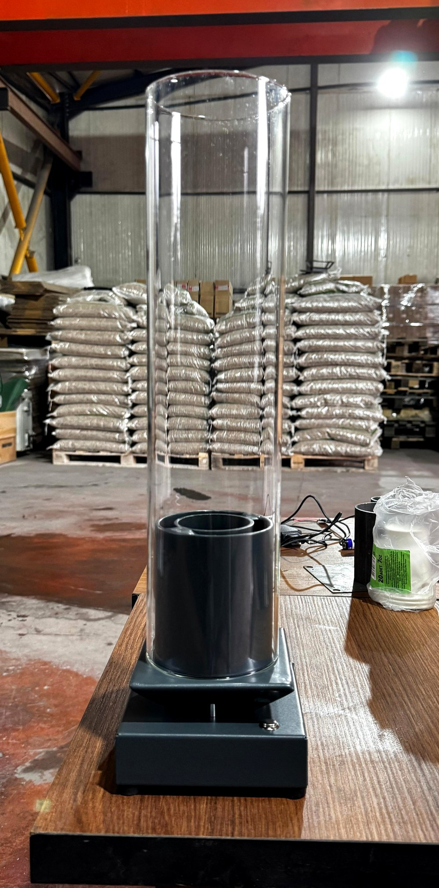
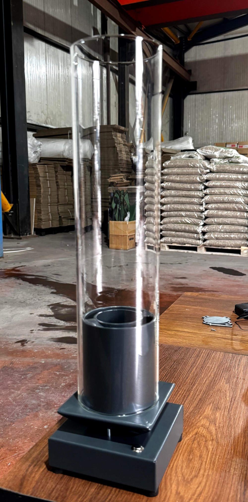

Türkiye'de tasarlanır
Alev, bu kez
sizin hikayenizi anlatıyor.
Bitenol, ısıya dayanıklı akrilik tüp ve fan kontrollü alev sistemine sahip, kişiselleştirilebilir bir masaüstü biyoetanol şömine. Duman yok, kül yok — sadece tasarım ve gerçek alev.

Üretim atölyemizden — gerçek numune fotoğrafı
Ürün
Sade bir siluet, düşünülmüş her detay

Isıya dayanıklı akrilik tüp
Yanmaz sınıfı, test sertifikalı akrilik tüp — alevi her yönden görünür kılar, kullanıcı tarafından elle takılıp çıkarılabilir.
Fitilli yakıt sistemi
Biyoetanol, açık bir kaba değil; fitil ve gözenekli malzemeye dökülür. Yakıt malzemede kaldığı sürece alev düzenli şekilde yanmaya devam eder.
Tek düğmeyle alev kontrolü
Tabandaki açma/kapama düğmesi entegre bir fanı kontrol eder; aynı düğme alevi yukarı doğru canlandırır veya söndürür.
Pil veya USB-C şarj
Kalem pil veya dahili şarjlı batarya ile çalışır; Type-C girişten şarj edilebilir.
İki katmanlı çelik taban
Mat antrasit kaplamalı, pahlı geçiş plakalı çelik taban — düşük ağırlık merkezi ve sade bir duruş.
Nasıl Çalışır
Üç adımda gerçek alev
Yakıtı ekleyin
Biyoetanolü iç hazne içindeki fitil ve gözenekli malzemenin üzerine dökün.
Ateşleyin ve düğmeye basın
Taban üzerindeki tek düğme, entegre fanı devreye alarak alevi yukarı doğru canlandırır.
Tadını çıkarın, söndürün
İşiniz bittiğinde aynı düğmeye basarak alevi güvenle söndürün.
Kişiselleştirme
Her Bitenol, bir hikaye taşıyabilir
Taban üzerindeki çıkarılabilir plakaya isim, tarih veya kısa bir mesaj kazıtabileceğiniz bir kişiselleştirme sistemi hazırlıyoruz.
Personal
Emma & Daniel
Signature
Emma & Daniel
19.09.2026
Home
Aile Evi
2026'dan beri
Kişiselleştirme sistemi yakında hazır olacak. Haberdar olmak isterseniz aşağıdan bize ulaşabilirsiniz.
Kalite & Güvenlik
Gerçek alevle çalışan bir ürün, ciddiye alınmayı hak eder
Açık dökme tasarım değil
Yakıt haznemiz fitil ve gözenekli malzeme kullanır; biyoetanol açık bir kaba biriktirilmez.
Sertifikalı akrilik
Dış tüpümüz ısıya dayanıklı, yanmaz sınıfı akrilik olup test belgeleri mevcuttur.
Test süreci devam ediyor
İlgili güvenlik standartlarına uygunluk için bağımsız laboratuvar testleri ve mühendislik incelemesi sürüyor. Sertifikasyon tamamlandığında bu sayfa güncellenecektir.
Bitenol sıvı yakıtla çalışan bir üründür. Kullanım kılavuzunu daima okuyun, yakıtı yalnızca soğuk ve sönük haldeyken ekleyin, çocuklardan ve yanıcı maddelerden uzak tutun.
Nerede Satın Alınır
Bitenol yakında bu adreslerde
Trendyol
Çok yakında
Etsy
Yakında
Amazon
Yakında
Bir pazar yeri canlıya alındığında bu kartlar doğrudan satış sayfasına bağlanacak şekilde güncellenecektir.
İletişim
Sorularınız mı var?
Toptan alım, iş birliği veya lansman bildirimi için bize yazın.
info@bitenol.comTODO: gerçek e-posta adresi ve varsa sosyal medya hesaplarıyla değiştirilmeli.